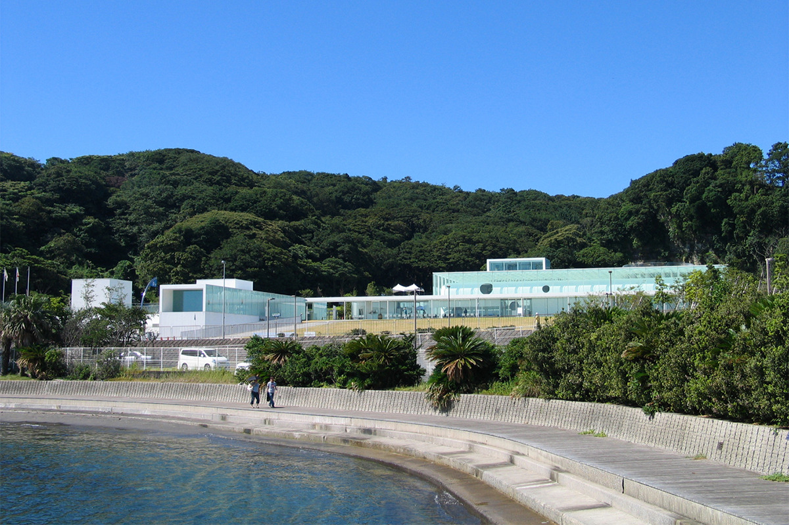
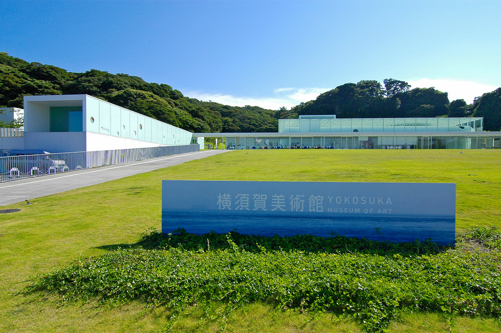
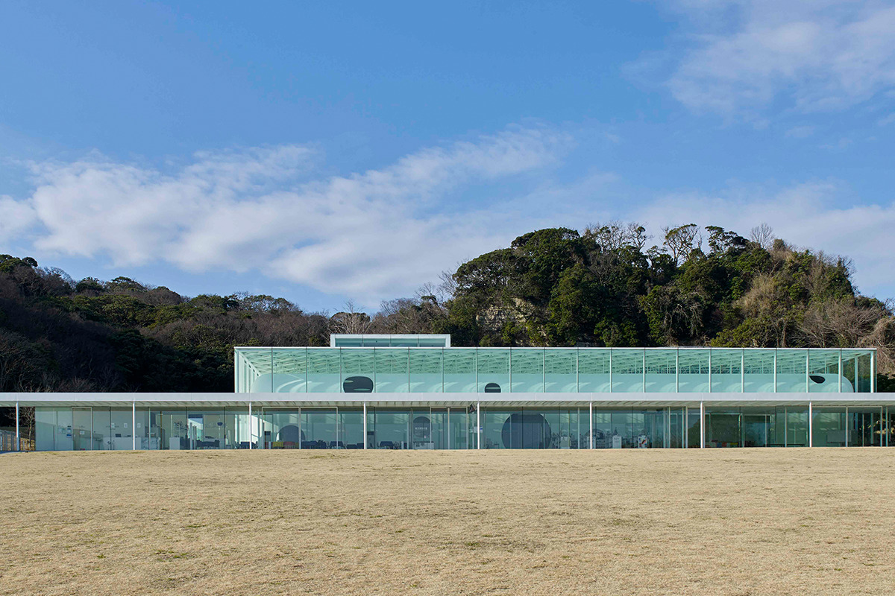
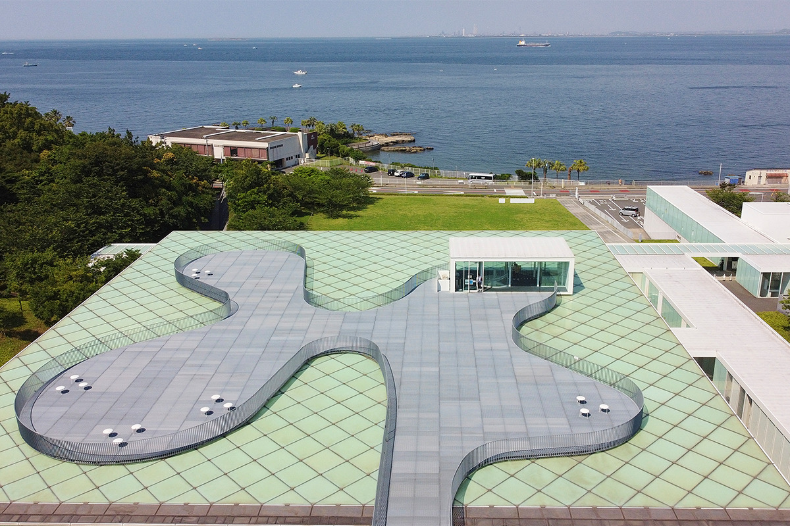
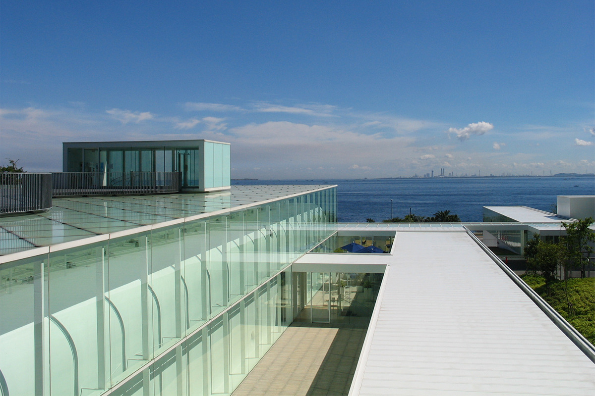
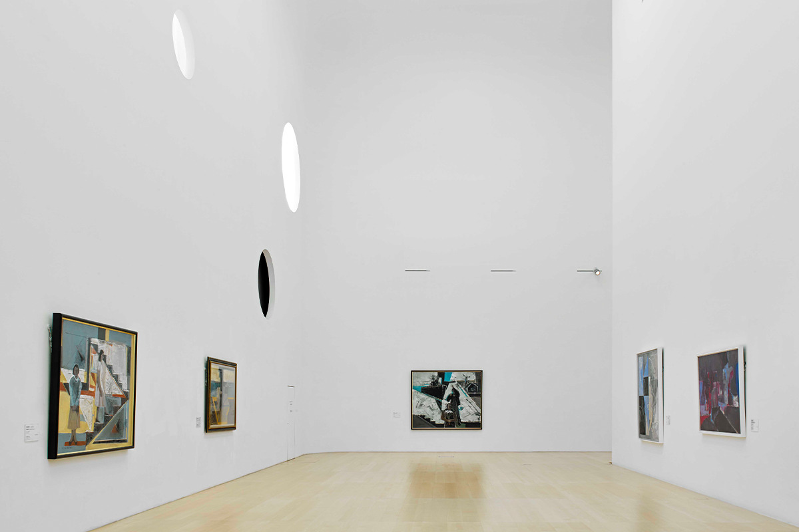
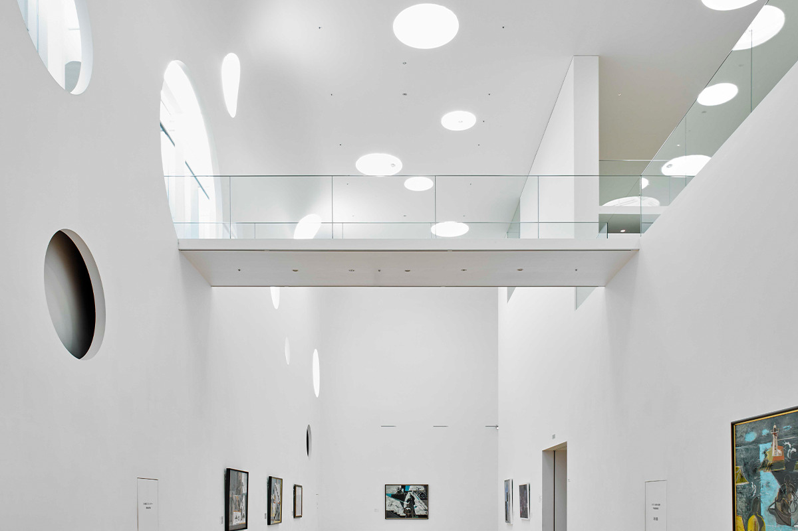
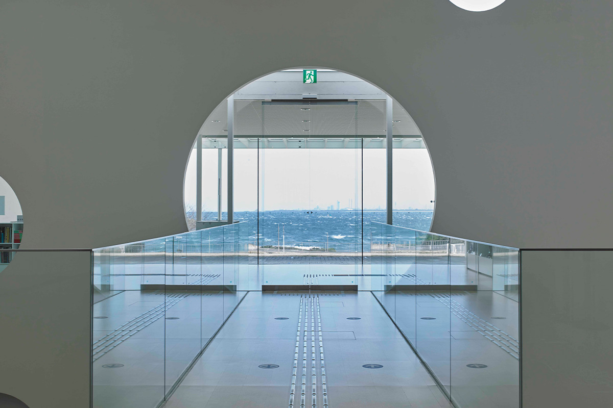
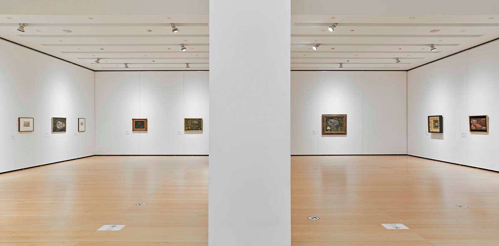
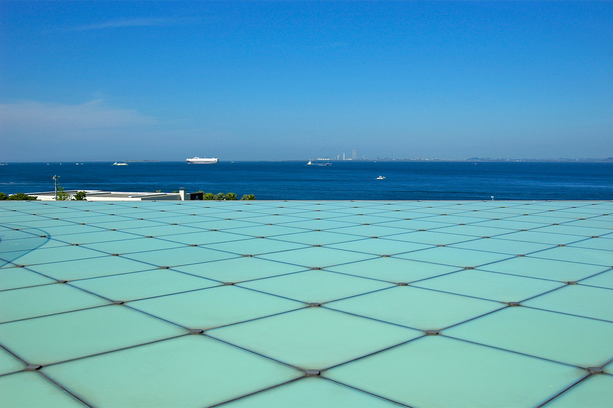

Префектура Канагава · Ёкосука · искусство и архитектура
Художественный музей Ёкосуки: стекло, сталь и Токийский залив

На берегу Токийского залива, у леса парка Каннондзаки, стоит низкий стеклянный музей. В нём хранится около 5000 произведений японского искусства Нового и Новейшего времени, а из залов видно море: по замыслу архитектора Рикэна Ямамото, музеем здесь становится вся окружающая среда.
Музей
Искусство между лесом и морем

Художественный музей Ёкосуки открылся в 2007 году к столетию города. С трёх сторон его обступает зелень префектурного парка Каннондзаки, а прямо перед ним лежит Токийский залив. Девиз проекта звучит так: «Музей это вся окружающая среда».
Город начал собирать искусство в 1985 году. В 1996 году Ёкосуке целиком передали работы художника Канъэмона Асаи (1901–1983), и после этого строительство музея стало реальным планом. В 1998 году вдова художника Рокуро Таниути (1921–1981) подарила городу множество его картин для обложек еженедельника «Сюкан Синтё».
Кроме этих двух собраний в фондах есть работы авторов, связанных с Ёкосукой и полуостровом Миура, а также японская живопись, графика и скульптура Нового и Новейшего времени. Всего около 5000 произведений. Есть и библиотека: альбомы, книги об искусстве, книжки с картинками и материалы к текущим выставкам.

С ноября 2025 года музей почти десять месяцев был закрыт на ремонт и 5 сентября 2026 года открылся снова.
Архитектура
Здание, которое показывает себя
Проект создали Рикэн Ямамото и его бюро Riken Yamamoto & Field Shop. Главная черта фасада в двух вложенных оболочках: стеклянной снаружи и стальной внутри. В простой и красивый стеклянный короб архитектор поместил выставочные залы и хранилище, а перед ним поставил отдельный корпус с мастерской и рестораном. Вместе с площадью он образует открытое пространство, где вокруг искусства собирается самая разная культурная жизнь.
Здание, слитое с пейзажем
Участок с трёх сторон окружён лесом, а на северо-восток выходит к морю. Вид на Токийский залив отсюда великолепный, и архитектор хотел использовать рельеф, чтобы здание и пейзаж стали одним целым. Половину объёма он опустил под землю: так с моря взгляд проходит над крышей к лесу, а сооружение меньше страдает от морской соли. Со стороны моря участок плавно спускается прямо к воде, а надземная часть здания словно прячется в лесу.

Если спускаться со стороны холма, дорога без ступеней выводит прямо на площадь на крыше. Насмотревшись на залив, посетитель сам собой оказывается у входа в здание.
Двойная оболочка из стекла и стали
Выставочный корпус одет в двойную оболочку. Снаружи нужна прозрачная кожа, которая позволяет свободно прорезать проёмы и защищает от соли, поэтому для неё выбрали стекло: оно почти не ржавеет и не стареет. Внутренняя оболочка сварена из стальных листов и окутывает всё пространство одной скорлупой. Количество света регулируют размер и число отверстий в ней.

Сварные листы дают гладкие поверхности без единого шва, и внутри возникает особая атмосфера. Для экспонатов предусмотрены закрытые залы, а входной холл и галерея высотой в несколько этажей свободно пропускают дневной свет.
Галерея под стальным куполом
К входному холлу ведёт мост над подземным этажом, и по пути внизу видны выставленные работы. Внутри стальной оболочки стены и потолок переходят друг в друга без углов, как свод. В середине этого пространства островом стоят залы и хранилище, а зазор между ними и оболочкой, похожий на ров, превращён в многосветную галерею для коллекции на подземном этаже. Потолок здесь поднимается примерно на 12 м, ширина прохода около 4 м с юга, запада и востока и 7,5 м с севера. Это самое выразительное пространство музея.


В холле и галерее подземного этажа круглые отверстия в стальных стенах и потолке управляют светом, теплом и взглядом. С северной стороны, куда не попадает прямое солнце, отверстий больше и они крупнее, с южной их меньше и они мельче. Поэтому пространство светлеет по мере движения на север. В выставочных залах первого этажа между комнатами есть небольшие промежутки, которые здесь называют «галереями»: через круглое окно в них видно море, и это короткая передышка между залами. Другие отверстия показывают лес и цвет неба, так что погода снаружи чувствуется и внутри.

На указателях в музее нарисованы забавные человечки: один поднимается по лестнице, другой читает книгу. Каждый показывает, чем занимаются в этом месте, и у каждого будто есть немного характера.
Посещение
Залы, библиотека и три площади

В выставочных залах первого этажа проходят разнообразные временные выставки: зарубежное искусство, японское искусство Нового и Новейшего времени. В залах и галерее подземного этажа показывают собрание музея, в том числе работы Канъэмона Асаи, и каждый раз под новым углом и простым языком.
Отдельный зал посвящён Рокуро Таниути. Художник держал мастерскую в Камои, районе Ёкосуки, и в его зале можно увидеть разные стороны его мира, прежде всего более 1300 картин для обложек «Сюкан Синтё».
В библиотеке любой может бесплатно листать альбомы, книги об искусстве, журналы и каталоги выставок музеев всей Японии. На дом книги не выдают.

У музея три площади. «Морская площадь» перед зданием принимает занятия мастерской и киносеансы под открытым небом, на ней стоит скульптура Исаму Вакабаяси (1936–2003) «Valleys (2nd stage)». На «площадь на крыше» можно подняться и со стороны холма: она лежит над стеклянной кровлей главного корпуса, пол там решётчатый, а внутрь ведёт небольшой павильон. За ней начинается «горная площадь», откуда дорога уходит в парк Каннондзаки, а впереди открывается Токийский залив.
В мастерской проходят занятия и лекции, в музейном магазине продают каталоги выставок, книги и сувениры. Есть и итальянский ресторан ACQUAMARE, меню для которого составил шеф известного токийского ресторана Acqua Pazza.
Художественный музей Ёкосуки
- Адрес
- префектура Канагава, Ёкосука, Камои, 4-1
- Часы работы
- 10:00–18:00
- Выходные
- первый понедельник месяца (если это праздник, музей открыт)
- Сайт
- yokosuka-moa.jp